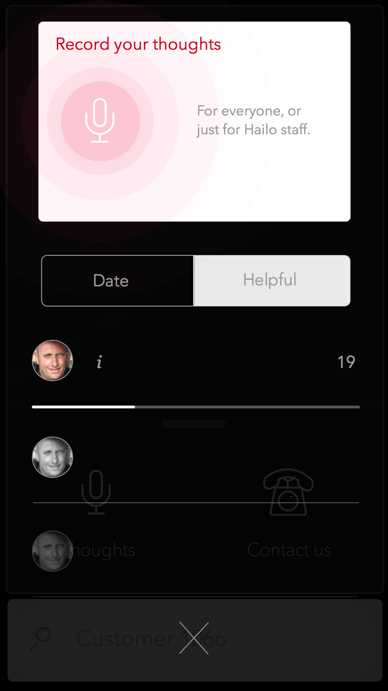

Hey Rob & Mara. I'm Nique.
Pro surfer. Web only (afraid of sea).
Research & process
I start off just reading what I have and trying to draw from it a fat map.

So that I can bereassured
Acceptance criteria
Negatives & positives help judge every aspect of step 2.
Context is crucial-
Cradle Fixed.
-
Gestures Limited.
-
Focus Divided.
I like to then doodle briefly outside of a prescribed journey, if I have the time. It helps reveal patterns & identify possible features. As a couple of examples:
-
Record job/driver Tell phone about job/passenger.
-
-
Give confidence Could dishearten majority.
-
Play a bit Just quick try.
Wireframing
I like to use virtually no colour in wireframes, and not just use block elements because it helps eliminate misinterpretations between project stages. When looking at basic animation demos I tend to use blocks if I have little time as I'm looking for logic in the movement - content isn't so key.
-
Filtering Seeing how after searching, driver can filter search within context.
-
-
Flicks Looking at possible animations between journeys in a card system.



USEFUL FEATURES
"We pride ourselves on our network
...individuals with hard-won, in-depth knowledge of their city"
hailoapp.com/drivers
-
Share knowledge Waze & history. Look for patterns over time.
-
Set targets Witness & record success.
-
Empower Hailo calendar of London. Features on passengers.
-
Landscape mode Driver takes a break, access extra features.